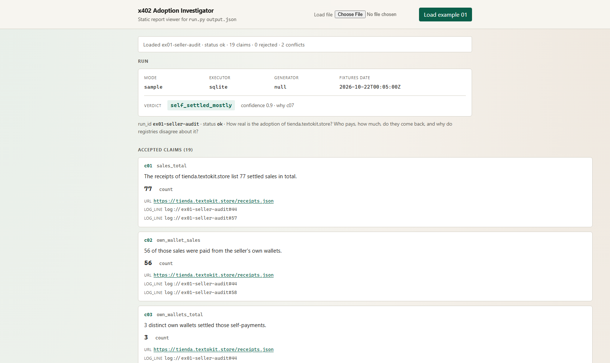

A multi-agent system that answers "how real is x402 adoption?" and proves every number it says: each claim links to a URL with the hash of the bytes fetched, a Base transaction, or a line of its own log.
Team Automata · Martin Pisacreta (solo, Argentina) · Meterless · Zetaris · Cursor
User: the operator of an autonomous agent that sells or buys over x402 and must decide where the real demand is. Today every source gives a different answer, and none of them says why.
| Source | What it measures | Endpoints for tienda.textokit.store |
|---|---|---|
| CDP Bazaar search | listed resources, capped at 20 results | 17 |
| Store openapi.json | declared paid operations | 17 |
| Agent402 | paid tools (of 34 tools) | 17 |
| vet402 | resolved endpoints | 19 |
| x402-trust | keyword search matches | 36 |
Activity disagrees too: Bazaar 30-day counters sum to 60 calls, the seller's receipts list 77 settled sales, and 56 of them were paid by the seller itself.
Bazaar, the seller's receipts, Base RPC, x402-trust, Agent402 and vet402 each measure a different thing on a different window.
Settlements are checked on Base by decoding the USDC Transfer log, never trusting tx.from, which is the facilitator.
When sources differ, the answer carries a Conflict object with each value, its measurement basis and why they differ.
Sources go down mid-run. They become explicit "unavailable" entries with a logged recovery, never silent zeros.
Input: one JSON question
{"run_id": "ex01-seller-audit",
"input": {"question": "How real is the adoption of
tienda.textokit.store? Who pays, how much,
do they come back, and why do registries
disagree about it?"}}
Output: one JSON envelope and a Markdown report
Every metric runs as committed SQL and as a pure Python reducer over the same exports. A claim survives only if both agree.
Evidence, recomputation, scope, staleness, conflict citation, memory caveats, plus a narrative pass that maps every number in the text to an accepted claim.
handoff, fetch, sql, claim, conflict, critique, retry and recovery lines in logs/<run_id>/run.jsonl.
guard network disabled in sample mode (socket.connect patched) handoff planner → collector plan (10 items, sha256 abce43a7…) handoff collector → keeper observations (9, sha256 debfb2…) recovery collector fixture_miss on a Base receipt: settlement marked unverifiable handoff verifier → keeper chain_facts (1) handoff keeper → analyst query_ids (13) conflict k01 endpoint_count_for_host five sources, five measurement bases conflict k02 calls_30d_for_host Bazaar 30-day counter vs seller receipts handoff writer → critic answer critique round 1 C1…C7 accept 19 claims · narrative pass: 62 numbers mapped, 0 unsourced handoff keeper → hmem claims (19) · memory feedback written
Example 1 emits 108 events: 11 handoffs, 17 fetches, 13 SQL queries, 8 critiques, 5 recoveries, 2 conflicts.
Executor, SQL sha256, row count, time used and tables with source URLs, in sql.jsonl and zetaris.jsonl. Live traces are committed separately from the offline examples.
Verdict self_settled_mostly. 77 sales, 56 paid by the seller itself; 21 external sales by 4 payers, 0.044 USDC in total.
Verdict concentrated. 28,462 Bazaar resources, 2,680 hosts, 1,785 payTo wallets; the top host holds 29.5% of 824,796 calls in 30 days.
Verdict adoption_thin. One external payer, one purchase of 0.001 USDC, the settlement verified on Base against the receipts.
The honest finding for our own store: most of its sales were self-tests. The system says so, with the proof.

git clone https://github.com/martinPisacreta/x402-adoption-investigator cd x402-adoption-investigator python run.py --sample --input examples/ex1.json
Pre-existing component declared: the Automata x402 store (tienda.textokit.store), the data subject of example 1. Everything else was written in the build window.